4 Funções trigonométricas
Anotações das aulas
Aula 3 - P9) Funções trigonométricas
Algumas imagens e sites na internet que pode ajudar:
12) \(f(x) = \sin x\)
| Tipo | Limite |
|---|---|
| \(x \to + \infty\) | \(\nexists \space \\lim_{x \to + \infty } \space \sin(x)\) |
| \(x \to - \infty\) | \(\nexists \space \\lim_{x \to - \infty } \space \sin(x)\) |
| \(x \to 0^+\) | \(\\lim_{x \to 0^+ } \space \sin(x) = 0\) |
| \(x \to 0^-\) | \(\\lim_{x \to 0^- } \space \sin(x) = 0\) |
| \(x \to 0\) | \(\\lim_{x \to 0 } \space \sin(x) = 0\) |
13) \(f(x) = |\sin x |\)
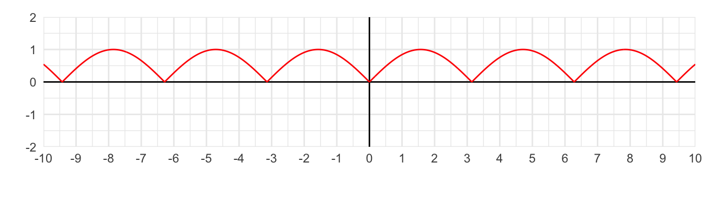
| Tipo | Limite |
|---|---|
| \(x \to + \infty\) | \(\nexists \space \\lim_{x \to + \infty } \space |\sin(x)|\) |
| \(x \to - \infty\) | \(\nexists \space \\lim_{x \to - \infty } \space |\sin(x)|\) |
| \(x \to 0^+\) | \(\\lim_{x \to 0^+ } \space |\sin(x)| = 0\) |
| \(x \to 0^-\) | \(\\lim_{x \to 0^- } \space |\sin(x)| = 0\) |
| \(x \to 0\) | \(\\lim_{x \to 0 } \space |\sin(x)| = 0\) |
14) \(f(x) = \cos x\)

| Tipo | Limite |
|---|---|
| \(x \to + \infty\) | \(\nexists \space \\lim_{x \to + \infty } \space \cos(x)\) |
| \(x \to - \infty\) | \(\nexists \space \\lim_{x \to - \infty } \space \cos(x)\) |
| \(x \to 0^+\) | \(\\lim_{x \to 0^+ } \space \cos(x) = 1\) |
| \(x \to 0^-\) | \(\\lim_{x \to 0^- } \space \cos(x) = 1\) |
| \(x \to 0\) | \(\\lim_{x \to 0 } \space \cos(x) = 1\) |
15) \(f(x) = \tan x\)

Aula 4 - P9) Funções trigonométricas
Extra: Gráfico das funções seno e cosseno
São gráficos parecidos, porém transladados.
A função cosseno é par, e a função seno é ímpar. Ou seja: a função cosseno é simétrica em relação ao eixo y.
\[\cos(-x) = \cos(x)\]
\[\sin(-x) = -\sin(x)\]
Essas funções são limitadas:
- \(-1 \leq \sin x \leq 1\)
- \(-1 \leq \cos x \leq 1\)
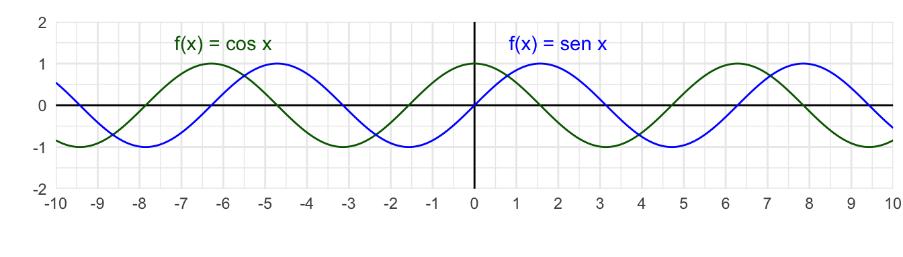
16) \(f(x) = x \times \sin x\)
Pensar usando a técnica do professor: separar a função em duas partes, e fazer o gráfico de cada uma separadamente.
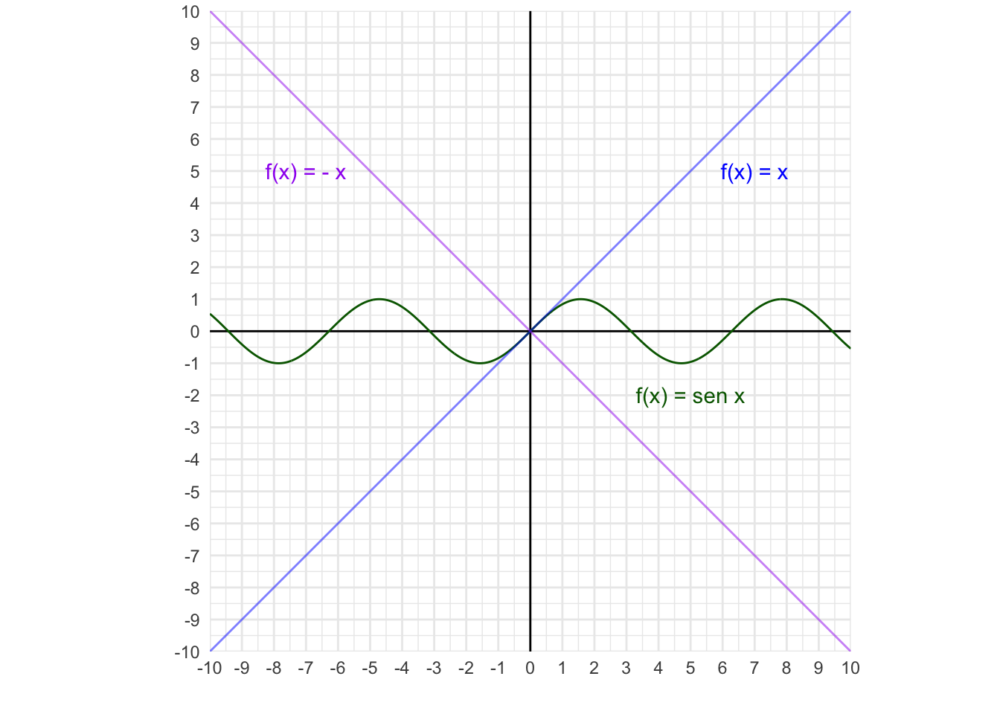
O resultado da multiplicação das duas funções é:
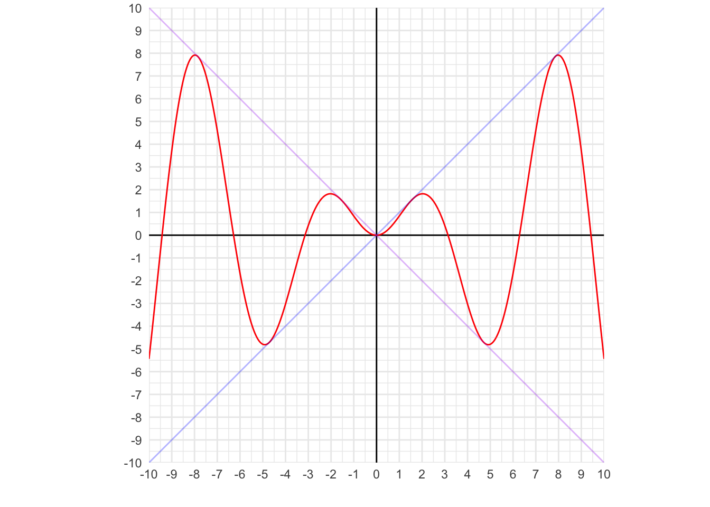
É uma função par: \[ f(-x) = -x \times \sin(-x) = -x \times (-\sin x) = x \times \sin x = f(x) \]
| Tipo | Limite |
|---|---|
| \(x \to + \infty\) | \(\nexists \space \\lim_{x \to + \infty } \space x \times \sin(x)\) |
| \(x \to - \infty\) | \(\nexists \space \\lim_{x \to - \infty } \space x \times \sin(x)\) |
| \(x \to 0^+\) | \(\\lim_{x \to 0^+ } \space x \times \sin(x) = 0\) |
| \(x \to 0^-\) | \(\\lim_{x \to 0^- } \space x \times \sin(x) = 0\) |
| \(x \to 0\) | \(\\lim_{x \to 0 } \space x \times \sin(x) = 0\) |
17) \(f(x) = x^2 \times \sin x\)
Vamos fazer o gráfico de cada parte separadamente:
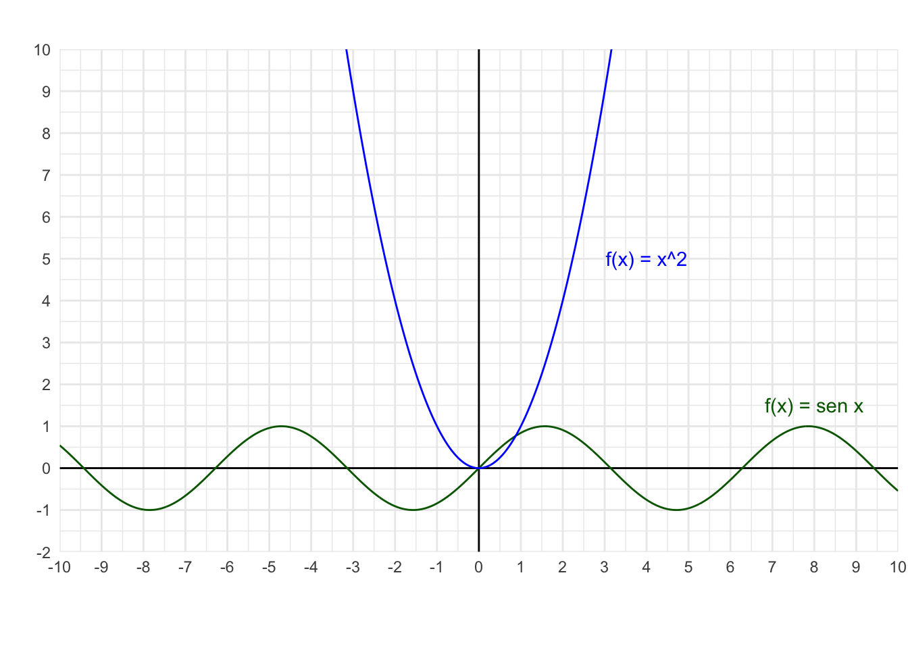
O resultado da multiplicação das duas funções é:
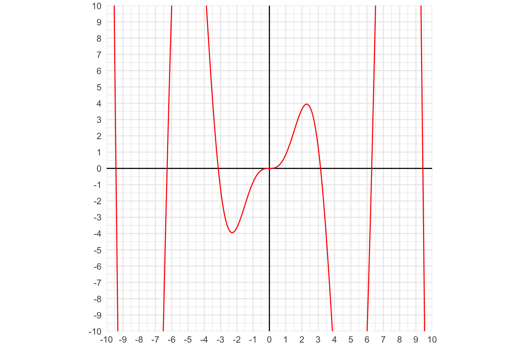
Vamos ver sem o “zoom”:
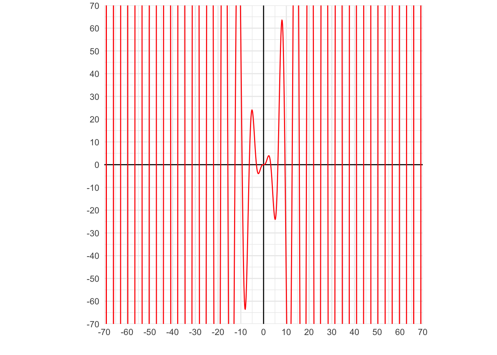
É uma função ímpar: \[ f(-x) = (-x)^2 \times \sin(-x) = x^2 \times (-\sin x) = -(x^2 \times \sin x ) = -f(x) \]
| Tipo | Limite |
|---|---|
| \(x \to + \infty\) | \(\nexists \space \\lim_{x \to + \infty } \space x^2 \times \sin(x)\) |
| \(x \to - \infty\) | \(\nexists \space \\lim_{x \to - \infty } \space x^2 \times \sin(x)\) |
| \(x \to 0^+\) | \(\\lim_{x \to 0^+ } \space x^2 \times \sin(x) = 0\) |
| \(x \to 0^-\) | \(\\lim_{x \to 0^- } \space x^2 \times \sin(x) = 0\) |
| \(x \to 0\) | \(\\lim_{x \to 0 } \space x^2 \times \sin(x) = 0\) |
18) \(f(x) = \sin \frac{1}{x}\)
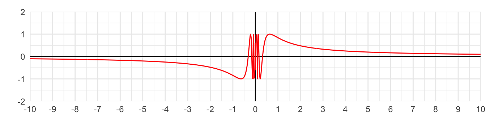
É uma função ímpar:
\[ f(-x) = \sin \frac{1}{-x} \\ = \sin \frac{-1}{x} \\ = - \sin \frac{1}{x} \\ = -f(x) \]
| Tipo | Limite |
|---|---|
| \(x \to + \infty\) | \(\lim_{x \to + \infty } \space \sin\frac{1}{x} = 0\) |
| \(x \to - \infty\) | \(\lim_{x \to - \infty } \space \sin\frac{1}{x} = 0\) |
| \(x \to 0^+\) | \(\nexists \space \lim_{x \to 0^+ } \space \sin\frac{1}{x}\) |
| \(x \to 0^-\) | \(\nexists \space \lim_{x \to 0^- } \space \sin\frac{1}{x}\) |
| \(x \to 0\) | \(\nexists \space \lim_{x \to 0 } \space \sin\frac{1}{x}\) |
19) \(f(x) = x \times \sin\frac{1}{x}\)
Quando \(\sin \frac{1}{x} = 1\), o \(f(x)\) coincidirá com \(x\) (pois será \(x \times 1 = x\)).
Vamos fazer o gráfico de cada parte separadamente:
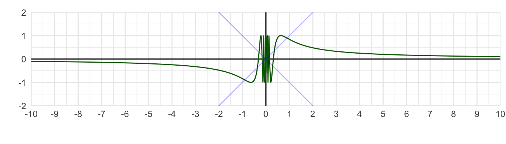
Ao multiplicar as duas funções, temos:
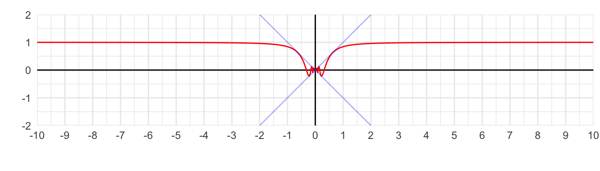
É interessante ver com um “zoom”:
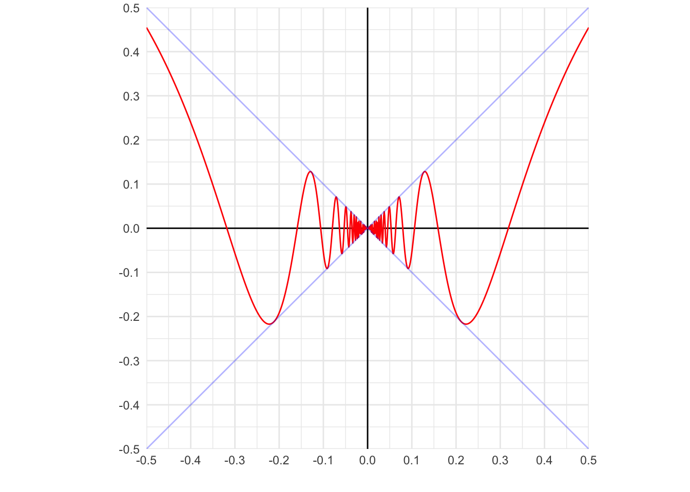
| Tipo | Limite |
|---|---|
| \(x \to + \infty\) | \(\lim_{x \to + \infty } \space x \times \sin\frac{1}{x} = 1\) |
| \(x \to - \infty\) | \(\lim_{x \to - \infty } \space x \times \sin\frac{1}{x} = 1\) |
| \(x \to 0^+\) | \(\lim_{x \to 0^+ } \space x \times \sin\frac{1}{x} = 0\) |
| \(x \to 0^-\) | \(\lim_{x \to 0^- } \space x \times \sin\frac{1}{x} = 0\) |
| \(x \to 0\) | \(\lim_{x \to 0 } \space x \times \sin\frac{1}{x} = 0\) |
Sugestão Julio: \(f(x) = \frac{1}{\sin x}\)
O gráfico está com um erro.